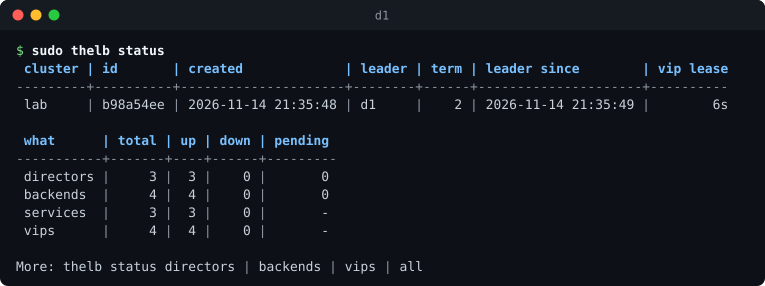
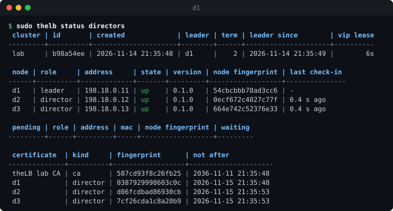
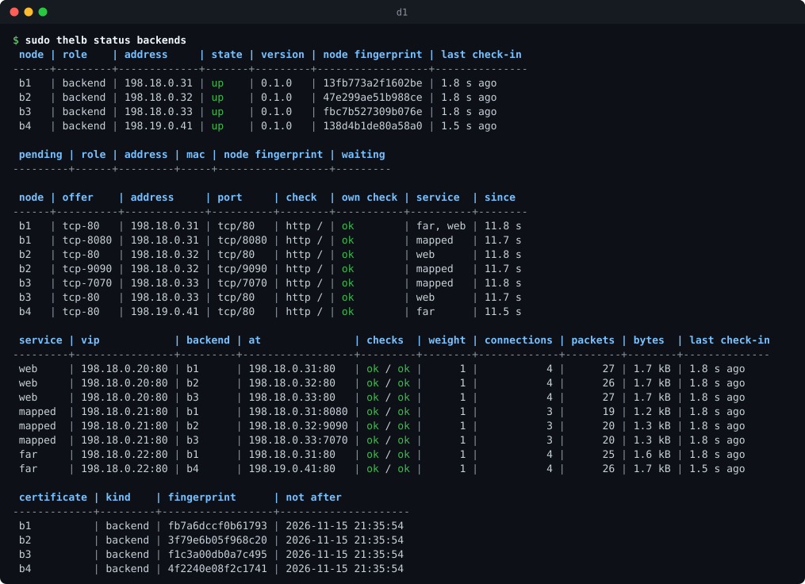
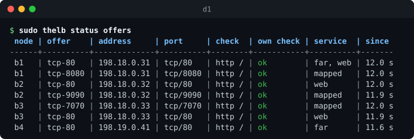

Reference
Reading thelb status
What each table and column of thelb status means.
The views#
| Command | Shows |
|---|---|
thelb status | the summary: the cluster, and how many of each thing are up |
thelb status directors | the cluster, directors, pending directors, certificates |
thelb status backends | backends, pending backends, offers, and each service's backends |
thelb status offers | every backend's offers |
thelb status vips | VIPs and who holds them, services, pools |
thelb status all | everything |
thelb status, status directors and status vips are quick at any size. The views with the backends table also read IPVS's traffic counters on the leader, service by service: about a second for a thousand services.
The summary#

As text
$ sudo thelb status
cluster | id | created | leader | term | leader since | vip lease
---------+----------+---------------------+--------+------+---------------------+-----------
lab | ac7940f8 | 2026-11-15 20:53:47 | d1 | 2 | 2026-11-15 20:53:48 | 6s
what | total | up | down | pending
-----------+-------+----+------+---------
directors | 3 | 3 | 0 | 0
backends | 4 | 4 | 0 | 0
services | 3 | 3 | 0 | -
vips | 4 | 4 | 0 | -
More: thelb status directors | backends | vips | allNodes#

As text
$ sudo thelb status directors
cluster | id | created | leader | term | leader since | vip lease
---------+----------+---------------------+--------+------+---------------------+-----------
lab | ac7940f8 | 2026-11-15 20:53:47 | d1 | 2 | 2026-11-15 20:53:48 | 6s
node | role | address | state | version | node fingerprint | last check-in
------+----------+-------------+-------+---------+------------------+---------------
d1 | leader | 198.18.0.11 | up | 0.1.0 | fa65c24eecea87db | -
d2 | director | 198.18.0.12 | up | 0.1.0 | 0d01fb995174b13f | 0.7 s ago
d3 | director | 198.18.0.13 | up | 0.1.0 | 87880f68e96e94b8 | 0.7 s ago
pending | role | address | mac | node fingerprint | waiting
---------+------+---------+-----+------------------+---------
certificate | kind | fingerprint | not after
--------------+----------+------------------+---------------------
theLB lab CA | ca | 88701f2376f6a200 | 2036-11-12 20:53:47
d1 | director | 84d9f095d83497bd | 2026-11-16 20:53:47
d2 | director | 3ed8d68d8eb537e7 | 2026-11-16 20:53:52
d3 | director | 14d4e4152322a864 | 2026-11-16 20:53:52state is one of:
| State | Means |
|---|---|
up | working |
down | a director that has not checked in for 3 seconds, or a backend with no heartbeat for 10; also a director the leader found gone and took out of the vote |
catching up | a new director, copying the cluster's state; it cannot vote yet |
stopped | a director stopped on purpose; out of the vote until it starts again |
unknown | this director cannot reach the leader, so it cannot tell |
The node fingerprint identifies the machine. Compare it before you approve a node.
The cluster#
- leader, term, leader since: who leads, the Raft term, and since when.
- vip lease: how long the kernel keeps a VIP after the leader's last renewal -
thelb admin lease.
Backends#

As text
$ sudo thelb status backends
node | role | address | state | version | node fingerprint | last check-in
------+---------+-------------+-------+---------+------------------+---------------
b1 | backend | 198.18.0.31 | up | 0.1.0 | 0beaab3f6d2dfb43 | 1.9 s ago
b2 | backend | 198.18.0.32 | up | 0.1.0 | 8948c9a6b3974fe9 | 1.9 s ago
b3 | backend | 198.18.0.33 | up | 0.1.0 | 86fbc35cd82f7f79 | 1.9 s ago
b4 | backend | 198.19.0.41 | up | 0.1.0 | 525079852f9bb67e | 1.5 s ago
pending | role | address | mac | node fingerprint | waiting
---------+------+---------+-----+------------------+---------
node | offer | address | port | check | own check | service | since
------+----------+-------------+----------+--------+-----------+----------+--------
b1 | tcp-80 | 198.18.0.31 | tcp/80 | http / | ok | far, web | 11.9 s
b1 | tcp-8080 | 198.18.0.31 | tcp/8080 | http / | ok | mapped | 11.9 s
b2 | tcp-80 | 198.18.0.32 | tcp/80 | http / | ok | web | 11.9 s
b2 | tcp-9090 | 198.18.0.32 | tcp/9090 | http / | ok | mapped | 11.9 s
b3 | tcp-7070 | 198.18.0.33 | tcp/7070 | http / | ok | mapped | 11.9 s
b3 | tcp-80 | 198.18.0.33 | tcp/80 | http / | ok | web | 11.9 s
b4 | tcp-80 | 198.19.0.41 | tcp/80 | http / | ok | far | 11.5 s
service | vip | backend | at | checks | weight | connections | packets | bytes | last check-in
---------+----------------+---------+------------------+---------+--------+-------------+---------+--------+---------------
web | 198.18.0.20:80 | b1 | 198.18.0.31:80 | ok / ok | 1 | 4 | 25 | 1.6 kB | 1.9 s ago
web | 198.18.0.20:80 | b2 | 198.18.0.32:80 | ok / ok | 1 | 4 | 26 | 1.7 kB | 1.9 s ago
web | 198.18.0.20:80 | b3 | 198.18.0.33:80 | ok / ok | 1 | 4 | 28 | 1.8 kB | 1.9 s ago
mapped | 198.18.0.21:80 | b1 | 198.18.0.31:8080 | ok / ok | 1 | 3 | 20 | 1.3 kB | 1.9 s ago
mapped | 198.18.0.21:80 | b2 | 198.18.0.32:9090 | ok / ok | 1 | 3 | 20 | 1.3 kB | 1.9 s ago
mapped | 198.18.0.21:80 | b3 | 198.18.0.33:7070 | ok / ok | 1 | 3 | 20 | 1.3 kB | 1.9 s ago
far | 198.18.0.22:80 | b1 | 198.18.0.31:80 | ok / ok | 1 | 4 | 26 | 1.7 kB | 1.9 s ago
far | 198.18.0.22:80 | b4 | 198.19.0.41:80 | ok / ok | 1 | 4 | 27 | 1.7 kB | 1.5 s ago
certificate | kind | fingerprint | not after
-------------+---------+------------------+---------------------
b1 | backend | 59eadccbf3c92770 | 2026-11-16 20:53:53
b2 | backend | a58c9affc202d176 | 2026-11-16 20:53:53
b3 | backend | 0e591fe45e592b4d | 2026-11-16 20:53:53
b4 | backend | bc53fbdf9b6dcef2 | 2026-11-16 20:53:53| Column | Means |
|---|---|
| checks | the backend's own check, then the directors' check: ok, fail, or - (no result yet) |
| weight | what IPVS has now: the assigned weight, or 0 while the backend does not serve |
| connections, packets, bytes | what IPVS sent the backend. There is no count of replies: they never pass the director |
| last check-in | how long ago the backend's last heartbeat arrived |
Services#
- backends up: how many of the assigned backends have a weight above 0.
- method:
directortunnel. - scheduler: how connections are spread -
wrrby default.
Offers#

As text
$ sudo thelb status offers
node | offer | address | port | check | own check | service | since
------+----------+-------------+----------+--------+-----------+----------+--------
b1 | tcp-80 | 198.18.0.31 | tcp/80 | http / | ok | far, web | 12.0 s
b1 | tcp-8080 | 198.18.0.31 | tcp/8080 | http / | ok | mapped | 12.0 s
b2 | tcp-80 | 198.18.0.32 | tcp/80 | http / | ok | web | 12.0 s
b2 | tcp-9090 | 198.18.0.32 | tcp/9090 | http / | ok | mapped | 11.9 s
b3 | tcp-7070 | 198.18.0.33 | tcp/7070 | http / | ok | mapped | 12.0 s
b3 | tcp-80 | 198.18.0.33 | tcp/80 | http / | ok | web | 11.9 s
b4 | tcp-80 | 198.19.0.41 | tcp/80 | http / | ok | far | 11.6 s- offer: the name the backend gave it.
- own check: the backend's own check, as its last heartbeat said.
- service: what it is assigned to;
-while not assigned.
VIPs#

As text
$ sudo thelb status vips
vip | purpose | pool | interface | held by | since
-------------+---------+------+-----------+---------+---------------------
198.18.0.10 | control | - | eth0 | d1 | 2026-11-15 20:53:48
198.18.0.20 | service | lab | eth0 | d1 | 2026-11-15 20:53:58
198.18.0.21 | service | lab | eth0 | d1 | 2026-11-15 20:53:59
198.18.0.22 | service | lab | eth0 | d1 | 2026-11-15 20:54:01
service | vip | port | scheduler | method | backends up
---------+-------------+--------+-----------+--------+-------------
web | 198.18.0.20 | tcp/80 | wrr | direct | 3 of 3
mapped | 198.18.0.21 | tcp/80 | wrr | direct | 3 of 3
far | 198.18.0.22 | tcp/80 | wrr | tunnel | 2 of 2
pool | network | addresses | interface | used
------+---------------+---------------------------+-----------+---------
lab | 198.18.0.0/24 | 198.18.0.20 - 198.18.0.29 | eth0 | 3 of 10- purpose:
control(the cluster's own address) orservice. - held by: the leader, while a backend serves one of the VIP's services;
-otherwise. - since: when the holder took it.
JSON#
thelb status --json gives everything as JSON, for scripts. It has a few fields the tables do not show - for example, who makes each backend's directors' check (checked_by), and each backend's active and inactive connections.